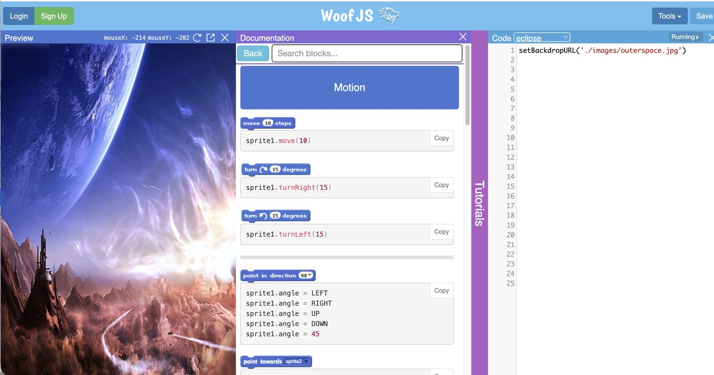
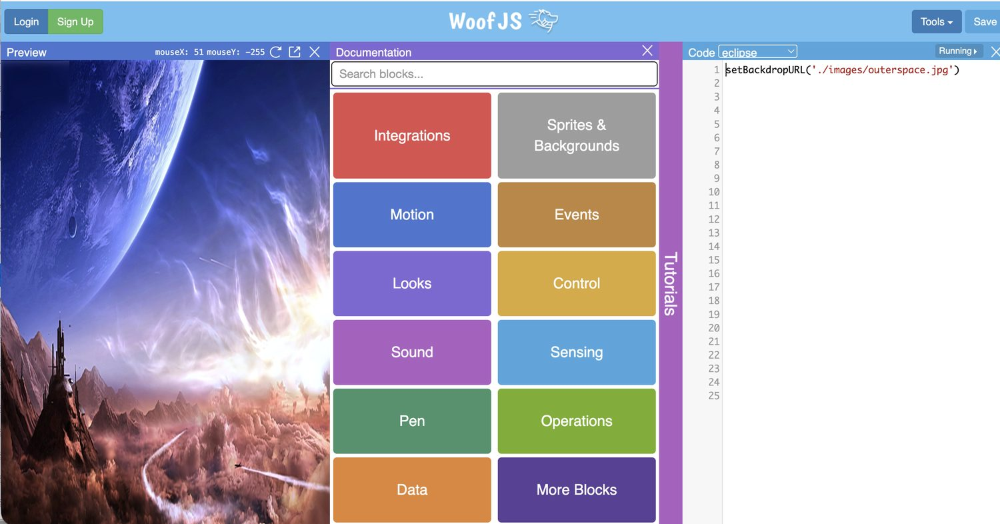
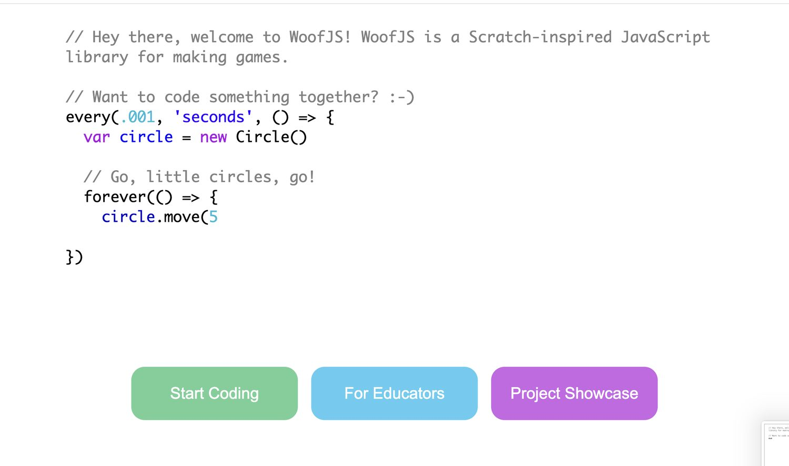

The Coding Space
A JavaScript learning platform for kids.
- Role
- Cofounder & COO, then Head of Marketing
- Timeline
- 2015 – 2020
- Platform
- K-12 education company + WoofJS, an open-source IDE
- Team
- Cofounders, plus 50 part-time teachers I hired and trained
- Outcome
- 1 → 5 locations · 1,000 students · $1M revenue · acquired
In short
- ProblemStudents moving from Scratch to real JavaScript hit a cliff. The tooling assumed you already knew what a program was, and the tutorials that were supposed to bridge the gap sat outside the product where they were easy to skip.
- ApproachWe built WoofJS, an open-source IDE for that transition, and I designed "untutorials" with our teachers, step-by-step questions rather than instructions, then built them into the product experience itself.
- ResultUsed by thousands of students. The company went from one location to five, 1,000 students, $1M in revenue, and an acquisition.
The problem
The insight was small and has stayed useful: a tutorial that tells you what to type produces someone who can type. A tutorial that asks you what should happen next produces someone who can think about the problem. Putting those questions inside the editor, at the moment the student was stuck, meant the education happened whether or not anyone chose to go read the docs.
I tested this directly with students and translated what I saw, along with my cofounder's technical vision, into what actually got built. That translation job, sitting between what users need and what engineering intends, is the part of product work I've done longest.
Who I had to keep aligned
This is the one thing on my resume I did with a real team rather than by myself, and it is the reason I know what the coordination costs. The curriculum team wanted depth. The instructors wanted something they could actually teach to a room of twelve kids on a Tuesday. The engineers wanted a codebase that wouldn't rot. The parents paying for it wanted to see something their kid made.
My job was to hold those four in one backlog. I ran the loop that turned classroom observation into specs: sit in on sessions, watch where students stalled, bring the pattern back, and write it up as something engineering could size. When we disagreed it was almost always because we were optimizing for different people, so I made whose-problem-is-this the first question on every ticket rather than the last.
Decisions and tradeoffs
A separate, better-produced tutorial site
Anything outside the product is optional, and optional education reaches the students who need it least. Putting the questions where the student was already stuck meant we didn't have to win their attention twice.
Copy-this-code walkthroughs, which demo far better
Instructions produce a student who can type. Questions produce one who can think about the problem. We lost some early wow in exchange for students who could still work when the tutorial ended.
Keeping the IDE proprietary as a moat
The business was the classrooms, not the editor. Open-sourcing it got the tool into schools we would never have reached and cost us nothing we were actually selling.
Letting each site adapt its own teaching material
Five locations with five curricula is five companies. Standardizing first is what made hiring and training 50 part-time teachers tractable, and it is why the thing was acquirable.
What shipped
WoofJS was the bridge itself. A student who already knew Scratch could open the block they recognized and see the JavaScript that does the same thing sitting right next to it, with a button to copy it into their own program.

sprite1.move(10). Students didn't learn syntax from a lecture. They recognized a block they'd already used and read across.

Results
What I'd do next
I never instrumented WoofJS. We knew the untutorials worked because we watched students in a room, which is real evidence but doesn't scale past the rooms you can sit in. If I ran it now I would put event tracking on the moment a student opens an untutorial and whether they finish the program afterward, the same funnel thinking I later applied to Free Time. The qualitative read was right; I just couldn't prove it to anyone who wasn't in the room.